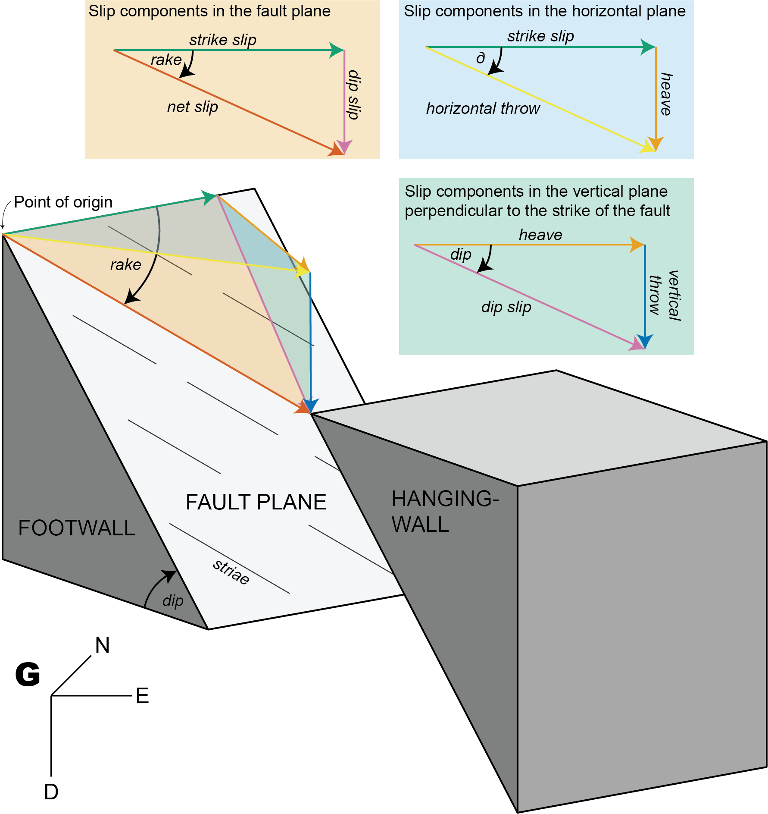

This tutorial demonstrates how you can derive displacement components from fault slip.
The offset along a fault can be factorized into several components.

Get different components with trigonometry
Fault orientation (dip angle, dip direction), shortening direction, and horizontal throw
Knowing the horizontal throw (e.g. from plate motion parameters), the remaining components of the displacements along a given fault are as follows.
Slip components in the horizontal plane:
Slip components in the vertical plane perpendicular to the strike of the fault:
Slip components in the fault plane plane:
Thus, the rake angle describes the ratio between the dip slip and the strike slip component.
Knowing the vertical throw (e.g. from thermochronology or petrology), the fault dip (?assumption), and the direction and amount of horizontal offset, the strike of the fault is as follows:
Knowing the vertical throw (e.g. from thermochronology or petrology), the fault strike (geomorphology), and the direction and amount of horizontal offset, the dip of the fault is as follows:
Knowing the vertical throw (e.g. from thermochronology or petrology) and the fault’s dip and rake, the horizontal offset, the horizontal throw, and the net-slip are as follows:
Fault displacement tensors
Each fault component is a vector describing its direction and length. For instance, the vector of the strike slip is:
Principal displacement tensor
The Eigen values of ; represented as are referred to as the heave, strike slip, and vertical throw component, respectively. These orthonormal vectors define a orthogonal matrix, i.e. the principal displacement tensor :
The tensor can also be defined by the magnitudes of the fault displacements:
Fu <- displacement_tensor(s = 2, v = -5, h = 3)
print(Fu)## [,1] [,2] [,3]
## [1,] 3 0 0
## [2,] 0 2 0
## [3,] 0 0 -5
## attr(,"class")
## [1] "matrix" "array" "ftensor"Orientation tensor
Fault orientation tensor is defined by the fault plane’s location, orientation (dip direction and dip angle), and the fault’s slip (direction and magnitude):
Fg <- displacement_tensor(s = 2, v = -5, h = 3, dip_direction = 45)
print(Fg)## [,1] [,2] [,3]
## [1,] 2.12132 1.414214 0
## [2,] 2.12132 -1.414214 0
## [3,] 0.00000 0.000000 -5
## attr(,"class")
## [1] "matrix" "array" "ftensor"From Principal displacement tensor to Orientation tensor
Translation point of origin in into point of measurement and rotate into fault orientation
displacement_tensor_decomposition(Fg, dip_direction = 45)## $displacements
## dip delta rake verticalthrow horizontalthrow heave dipslip
## [1,] 59.03624 56.30993 71.06818 -5 3.605551 3 5.830952
## strikeslip netslip
## [1,] 2 6.164414
##
## $fault
## Fault object (n = 1):
## dip_direction dip azimuth plunge sense
## 45.00000 59.03624 258.69007 -54.20424 -1.00000
##
## $strain_tensor
## [,1] [,2] [,3]
## [1,] 3.0 -1.5 -1.5
## [2,] -1.0 1.0 -1.0
## [3,] 2.5 2.5 15.0
##
## $volumetric_strain
## [1] 19
##
## $shear_strain
## [1] 5.196152